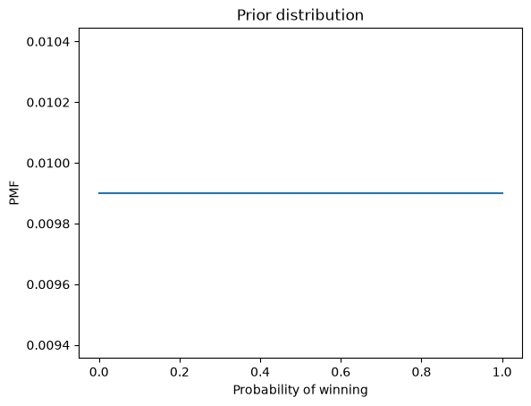
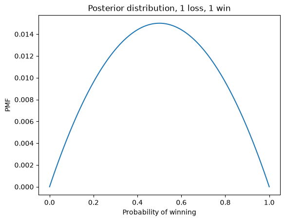
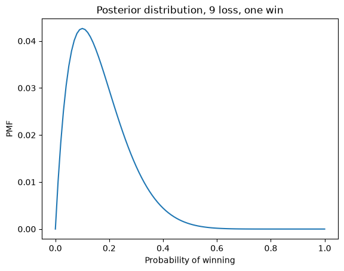
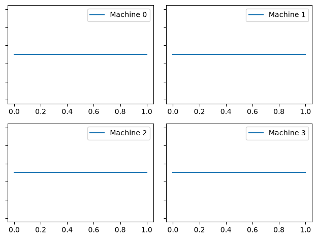
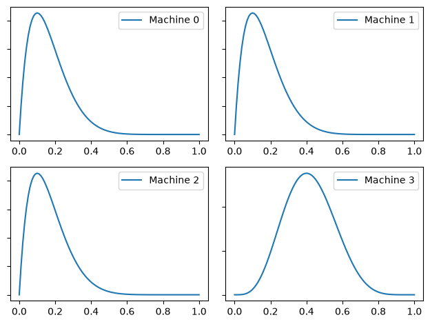
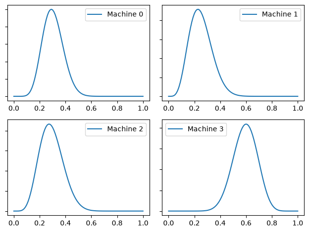

The Bayesian bandit problem#
Code and exercises from my workshop on Bayesian statistics in Python.
Click here to run this notebook on Colab. For the exercises, use the version with blanks.
import numpy as np
import pandas as pd
import matplotlib.pyplot as plt
import seaborn as sns
Suppose you have several “one-armed bandit” slot machines, and there’s reason to think that they have different probabilities of paying off.
Each time you play a machine, you either win or lose, and you can use the outcome to update your belief about the probability of winning.
Then, to decide which machine to play next, you can use the “Bayesian bandit” strategy, explained below.
First, let’s see how to do the update.
The prior#
If we know nothing about the probability of winning, we can start with a uniform prior.
xs = np.linspace(0, 1, 101)
prior = pd.Series(1/101, index=xs)
Here’s what it looks like.
def decorate_bandit(title):
"""Labels the axes.
title: string
"""
plt.xlabel('Probability of winning')
plt.ylabel('PMF')
plt.title(title)
prior.plot()
decorate_bandit('Prior distribution')

The update#
The following function takes a prior distribution and an outcome, either 'W' or 'L'.
It does a Bayesian update in place; that is, it modifies the distribution based on the outcome.
def update(pmf, data):
"""Likelihood function for Bayesian bandit
pmf: Series that maps hypotheses to probabilities
data: string, either 'W' or 'L'
"""
xs = pmf.index
if data == 'W':
pmf *= xs
else:
pmf *= 1-xs
pmf /= pmf.sum()
Here’s an example that starts with a uniform prior and updates with one win and one loss.
bandit = prior.copy()
update(bandit, 'W')
update(bandit, 'L')
bandit.plot()
decorate_bandit('Posterior distribution, 1 loss, 1 win')

Exercise 1#
Suppose you play a machine 10 times and win once. What is the posterior distribution of \(x\)?
# Solution
bandit = prior.copy()
for outcome in 'WLLLLLLLLL':
update(bandit, outcome)
bandit.plot()
decorate_bandit('Posterior distribution, 9 loss, one win')

Multiple bandits#
Now suppose we have several bandits and we want to decide which one to play.
For this example, we have 4 machines with these probabilities:
actual_probs = [0.10, 0.20, 0.30, 0.40]
The function play simulates playing one machine once and returns W or L.
from collections import Counter
# count how many times we've played each machine
counter = Counter()
def flip(p):
"""Return True with probability p."""
return np.random.random() < p
def play(i):
"""Play machine i.
returns: string 'W' or 'L'
"""
counter[i] += 1
p = actual_probs[i]
if flip(p):
return 'W'
else:
return 'L'
Here’s a test, playing machine 3 twenty times:
for i in range(20):
result = play(3)
print(result, end=' ')
L L L W L L W L L L L L L L L L L L L W
counter keeps track of how many times each machine has been played.
counter
Counter({3: 20})
Now I’ll make four copies of the prior to represent our beliefs about the four machines.
machines = [prior.copy() for i in range(4)]
This function displays four distributions in a grid.
options = dict(xticklabels='invisible', yticklabels='invisible')
def plot(machines, **options):
for i, m in enumerate(machines):
plt.subplot(2, 2, i+1)
m.plot(label='Machine %s' % i)
plt.gca().set_yticklabels([])
plt.legend()
plt.tight_layout()
plot(machines)

Exercise 2#
Write a nested loop that plays each machine 10 times and updates them based on the results; then plot the posterior distributions.
Hint: call play and then update.
# Solution
for i in range(4):
for _ in range(10):
outcome = play(i)
update(machines[i], outcome)
# Solution
plot(machines)

After playing each machine 10 times, we can summarize machines by printing the posterior mean and credible interval:
def pmf_mean(pmf):
"""Compute the mean of a PMF.
pmf: Series representing a PMF
return: float
"""
return np.sum(pmf.index * pmf)
from scipy.interpolate import interp1d
def credible_interval(pmf, prob):
"""Compute a credible interval.
pmf: Series representing a PMF
prob: probability of the interval
return: pair of float
"""
# make the CDF
xs = pmf.index
ys = pmf.cumsum()
# compute the probabilities
p = (1-prob)/2
ps = [p, 1-p]
# interpolate the inverse CDF
options = dict(bounds_error=False,
fill_value=(xs[0], xs[-1]),
assume_sorted=True)
interp = interp1d(ys, xs, **options)
return interp(ps)
for i, m in enumerate(machines):
print(pmf_mean(m), credible_interval(m, 0.9))
0.1668194469884906 [0.02859509 0.35941186]
0.1668194469884906 [0.02859509 0.35941186]
0.16681944698849058 [0.02859509 0.35941186]
0.41666666663460267 [0.19447309 0.64527985]
Bayesian Bandits#
To get more information, we could play each machine 100 times, but while we are gathering data, we are not making good use of it. The kernel of the Bayesian Bandits algorithm is that it collects and uses data at the same time. In other words, it balances exploration and exploitation.
The following function chooses among the machines so that the probability of choosing each machine is proportional to its “probability of superiority”.
def pmf_choice(pmf):
"""Draw a random sample from a PMF.
pmf: Series representing a PMF
returns: quantity from PMF
"""
return np.random.choice(pmf.index, p=pmf)
def choose(machines):
"""Use the Bayesian bandit strategy to choose a machine.
Draws a sample from each distributions.
returns: index of the machine that yielded the highest value
"""
ps = [pmf_choice(m) for m in machines]
return np.argmax(ps)
This function chooses one value from the posterior distribution of each machine and then uses argmax to find the index of the machine that chose the highest value.
Here’s an example.
choose(machines)
np.int64(3)
The strategy#
Putting it all together, the following function chooses a machine, plays once, and updates machines:
def choose_play_update(machines, verbose=False):
"""Chose a machine, play it, and update machines.
machines: list of Pmf objects
verbose: Boolean, whether to print results
"""
# choose a machine
i = choose(machines)
# play it
outcome = play(i)
# update beliefs
update(machines[i], outcome)
if verbose:
print(i, outcome, pmf_mean(machines[i]))
Here’s an example
choose_play_update(machines, verbose=True)
3 L 0.38461538455742045
Trying it out#
Let’s start again with a fresh set of machines and an empty Counter.
machines = [prior.copy() for i in range(4)]
counter = Counter()
If we run the bandit algorithm 100 times, we can see how machines gets updated:
num_plays = 100
for _ in range(num_plays):
choose_play_update(machines)
plot(machines)

We can summarize machines by printing the posterior mean and credible interval:
for i, m in enumerate(machines):
print(pmf_mean(m), credible_interval(m, 0.9))
0.30303030303031664 [0.17519305 0.43460073]
0.25000000058806265 [0.11502874 0.39891217]
0.29166666667068186 [0.14736865 0.44609924]
0.5925925925925926 [0.43067799 0.73670501]
The credible intervals usually contain the true values (0.1, 0.2, 0.3, and 0.4).
The estimates are still rough, especially for the lower-probability machines. But that’s a feature, not a bug: the goal is to play the high-probability machines most often. Making the estimates more precise is a means to that end, but not an end in itself.
Let’s see how many times each machine got played. If things go according to plan, the machines with higher probabilities should get played more often.
for i, count in sorted(counter.items()):
print(i, count)
0 31
1 22
2 22
3 25
Exercise 3#
Go back and run this section again with a different value of num_play and see how it does.
The algorithm I presented in this notebook is called Thompson sampling. It is an example of a general strategy called Bayesian decision theory, which is the idea of using a posterior distribution as part of a decision-making process, usually by choosing an action that minimizes the costs we expect on average (or maximizes the benefits).
In my opinion, strategies like this are the biggest advantage of Bayesian methods over classical statistics. When we represent knowledge in the form of probability distributions, Bayes’s theorem tells us how to change our beliefs as we get more data, and Bayesian decision theory tells us how to use those beliefs to make better decisions.
Copyright 2020–2026 Allen Downey